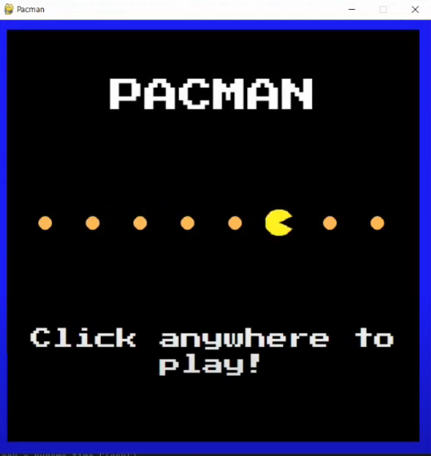
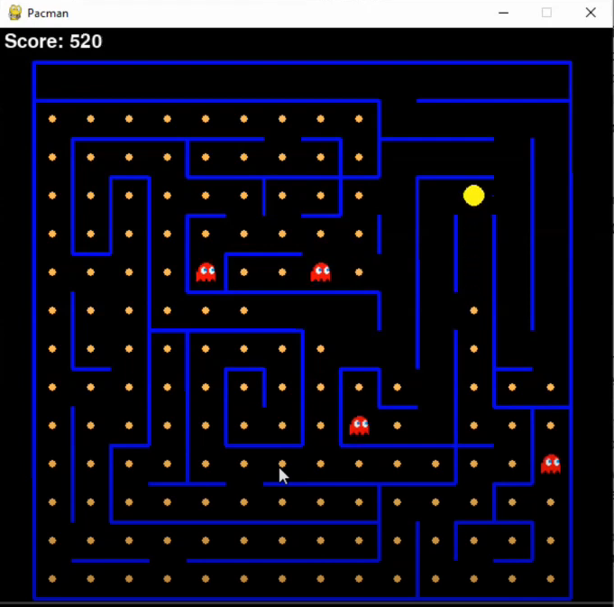

Pacman Video Game
The replica Pacman game plays just like Pacman and is just as fun! The user starts the game and gets thrown into the maze and has to fight for survival! Collect pellets to increase score and eventually all of them to beat the level. Be careful though: the ghosts are NOT friendly and end the game on contact.
The project required a ghost class which must generate random movements to keep the player on edge and guessing where they need to avoid. Contrarily, the Pacman class, operated by the user, only allows for movement along one axis at a time, to constrain movement to similar conditions as the actual game.